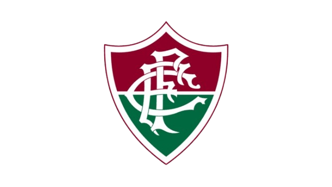

Fluminense Football Club
A origem do Fluminense ocorreu paralelamente à introdução do futebol no Rio de Janeiro. Em 1901, Oscar Cox, que teve contato com o futebol na Suíça, organizou uma partida no Rio contra jogadores ingleses. Após poucas partidas nesses moldes, o “Rio Team” viajou a São Paulo para sua primeira partida mais séria.
Após uma tentativa frustrada de montar um clube de futebol, o desejo se concretizou em 1902 com a fundação do Fluminense Football Club. Vinte participantes iniciais deram vida ao projeto, incluindo Horácio da Costa Santos, Mário Rocha e o próprio Oscar Alfredo Cox. O clube alugou uma chácara na Rua Guanabara, que rapidamente foi estruturada para dar suporte às atividades.
História e Cores
As primeiras cores representativas do Fluminense foram branco e cinza, presentes no uniforme da época, junto ao antigo escudo com as iniciais FFC em vermelho. No entanto, devido à dificuldade de encontrar tecidos nessas cores, em 1904 as cores foram modificadas para vermelho, verde e branco, combinação que permanece até os dias de hoje.
Títulos do Fluminense
- Copa Rio Internacional: 1952;
- Campeonato Brasileiro: 1984, 2010 e 2012;
- Torneio Roberto Gomes Pedrosa: 1970;
- Copa do Brasil: 2007;
- Campeonato Brasileiro (Série C): 1999;
- Torneio Rio-São Paulo: 1957 e 1960;
- Campeonato Carioca: 1906, 1907, 1908, 1909, 1911, 1917, 1918, 1919, 1924, 1936, 1937, 1938, 1940, 1941, 1946, 1951, 1959, 1964, 1969, 1971, 1973, 1975, 1976, 1980, 1983, 1984, 1985, 1995, 2002, 2005, 2012, 2022 e 2023;
- Taça Guanabara: 1966, 1969, 1971, 1975, 1983, 1985, 1991, 1993, 2012, 2017, 2022 e 2023;
- Taça Rio: 1990, 2005, 2018 e 2020;
- Torneio Início: 1916, 1924, 1925, 1940, 1941, 1943, 1954, 1956 e 1965.